⚠️ celula_0_utils não encontrado. Definindo helpers locais...Relatorio Teste
PÁGINA 1: EXECUTIVE COCKPIT
Objetivo: Validar a viabilidade macro do negócio, confrontando a Simulação Conservadora (Real) contra os Benchmarks de Mercado (Ideal).
Nesta seção, apresentamos o resumo executivo da operação, destacando a tração de receita (MRR), a eficiência de capital (Burn Rate) e os principais marcos atingidos.
📊 1.1 TABELA EXECUTIVA MASTER
| Métrica | M1 | M6 | M12 | M36 | Benchmark | Status |
|---|---|---|---|---|---|---|
| 💰 RECEITA | ||||||
| MRR | R$ 749 | R$ 2.4k | R$ 5.3k | R$ 59.7k | R$ 86.2k | 🔴 |
| ARR (Anual) | R$ 9.0k | R$ 29.0k | R$ 63.8k | R$ 716.5k | R$ 1.0M | 🔴 |
| Usuários Ativos | 8 | 25 | 56 | 624 | 901 | 🔴 |
| **** | ||||||
| 📊 UNIT ECONOMICS | ||||||
| LTV/CAC (Índice de Retorno) | 1.25x | 2.75x | 4.27x | 4.82x | 3.0x | ✅ |
| CAC (Custo Aquisição Cliente) | R$ 500 | R$ 250 | R$ 172 | R$ 236 | R$ 250 | ✅ |
| Churn (Taxa Cancelamento %) | 12.0% | 11.2% | 10.3% | 6.8% | 5.0% | 🔴 |
| Payback (Meses p/ Recuperar CAC) | 6.7m | 3.2m | 2.3m | 3.5m | >12m | ✅ |
| **** | ||||||
| 💵 CAIXA & RUNWAY | ||||||
| Caixa Disponível | R$ 4.2k | R$ 9.0k | R$ 21.6k | R$ 141.8k | R$ 50.0k | ✅ |
| Runway (Meses de Sobrevivência) | 2.6m | 3.6m | 7.2m | 3.5m | >12m | 🔴 |
| Burn Rate (Queima Mensal) | R$ 1.8k | R$ 425 | R$ 0 | R$ 0 | R$ 0 | ✅ |
| **** | ||||||
| 📈 MARGENS | ||||||
| Margem Bruta % | 80.2% | 80.1% | 80.2% | 80.1% | 70.0% | ✅ |
| EBITDA (Lucro Operacional) | R$ -1.8k | R$ -425 | R$ 1.5k | R$ 10.3k | R$ 0 | ✅ |
Nota: Benchmark = Cenário Ideal.

DEBUG: Executing gerar_grafico_temporal_correlacao V2.1 (FIX NAMEERROR)📈 EVOLUÇÃO MRR vs USUÁRIOS

📋 TABELA DE REFERÊNCIA
| Período | MRR Real | MRR Ideal | Usuários | Gap % |
|---|---|---|---|---|
| M1 | R$ 749 | R$ 2.1k | 8 | 65.1% |
| M3 | R$ 1.3k | R$ 1.9k | 13 | 34.0% |
| M6 | R$ 2.4k | R$ 6.4k | 25 | 62.1% |
| M12 | R$ 5.3k | R$ 18.7k | 56 | 71.6% |
| M24 | R$ 18.9k | R$ 47.3k | 197 | 60.1% |
| M36 | R$ 59.7k | R$ 86.2k | 624 | 30.7% |
🏁 TABELA DE MILESTONES
| Milestone | Meta | Real | Status |
|---|---|---|---|
| 🚀 Primeiro Cliente Pagante | M1 | M1 | ✅ IGUAL AO IDEAL |
| 💰 R$ 1k MRR | M1 | M3 | ⚠️ +2m ATRASO |
| 💰 R$ 5k MRR | M6 | M12 | ⚠️ +6m ATRASO |
| 👥 50 Usuários Ativos | M6 | M11 | ⚠️ +5m ATRASO |
| 💰 R$ 10k MRR | M9 | M18 | ⚠️ +9m ATRASO |
| 👥 196 Usuários (Meta M12) | M12 | M24 | ⚠️ +12m ATRASO |
| 💰 R$ 20k MRR | M13 | M25 | ⚠️ +12m ATRASO |
| 🎯 Break-Even (EBITDA > 0) | M2 | M8 | ⚠️ +6m ATRASO |
| 💰 R$ 47.3k MRR (Meta M24) | M24 | M34 | ⚠️ +10m ATRASO |
| 👥 901 Usuários (Meta M36) | M36 | — | 🔴 NÃO ATINGIU |
| 📈 LTV/CAC > 3x | M12 | M7 | 🟢 -5m ANTES |

🧠 INSIGHTS ESTRATÉGICOS DO COCKPIT
Tip💡 INSIGHT 1: Saúde Unitária (LTV/CAC)
- FATO: LTV/CAC = 3.85x no cenário conservador.
- CAUSA: Relação entre valor do cliente (LTV) e custo de aquisição (CAC).
- IMPLICAÇÃO: Cada R$ 1 investido em aquisição retorna R$ 3.85.
- AÇÃO RECOMENDADA: Escalar aquisição se > 3.0x. Revisar CAC/Churn se < 3.0x.
Warning💡 INSIGHT 2: Gap de Receita
- FATO: Gap de R$ 26.5k (31%) entre Real e Ideal.
- CAUSA: Diferença entre projeção conservadora e cenário otimista.
- IMPLICAÇÃO: Potencial de R$ 952.6k em 3 anos não capturado.
- AÇÃO RECOMENDADA: Aumentar conversão ou reduzir churn para fechar gap.
Important💡 INSIGHT 3: Saúde de Caixa
- FATO: Runway de 3.5 meses com caixa de R$ 141.8k.
- CAUSA: Caixa disponível ÷ Despesas mensais (R$ 40.5k).
- IMPLICAÇÃO: Tempo de sobrevivência sem nova receita.
- AÇÃO RECOMENDADA: Manter >12 meses. Se <6 meses, revisar custos urgente.
Note🔍 AUDITORIA & FÓRMULAS
- LTV = ARPU × (1 / Churn Rate)
- CAC = (Gasto Marketing + Gasto Vendas) / Novos Clientes
- LTV/CAC = LTV ÷ CAC (Meta: ≥3.0x)
- Runway = Caixa Disponível ÷ Despesas Mensais
- Gap = MRR Ideal - MRR Real
📁 Arquivos gerados:
• outputs/figs/pg1_kpi_cards.png
• outputs/figs/pg1_temporal_correlacao.png
• outputs/figs/pg1_eficiencia_marketing.png
================================================================================PÁGINA 2: GROWTH MACHINE
Objetivo: Demonstrar a eficiência da máquina de vendas e a escalabilidade do modelo de aquisição.
Analisamos aqui o Funil de Vendas, a relação LTV/CAC e a curva de saturação dos canais de marketing.
O volume de vendas sustenta a operação no cenário conservador?
📉 Funil de Aquisição: Conservador vs Benchmark (Log Scale)
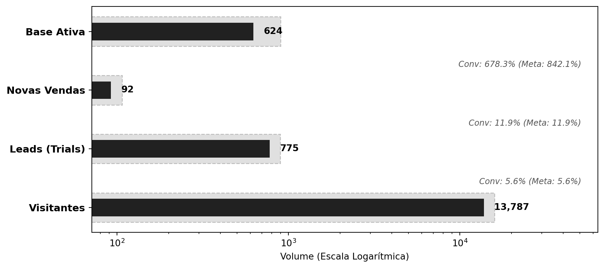
📖 COMO LER ESTE GRÁFICO:
1. **Eixo Y (Esquerda):** Etapas do Funil (Visitantes -> Leads -> Vendas -> Ativos).
2. **Barras Escuras (Sólidas):** Valores do seu cenário conservador ("Real").
3. **Barras Cinza (Fundo):** Benchmark de mercado ou Meta ("Ideal").
4. **Escala Logarítmica:** O Eixo X cresce exponencialmente para permitir visualizar milhões e unidades no mesmo gráfico.
5. **Regra de Sucesso:** Se a barra escura ultrapassar ou igualar a cinza, o benchmark foi atingido.📋 A PROVA NUMÉRICA:
| Período | Visitantes (Real) | Conv. Global Real | Conv. Meta (Ideal) | Δ (Delta) | Status |
|---|---|---|---|---|---|
| M1 | 1080 | 0.28% | 0.34% | -0.06 p.p. | PRÓXIMO |
| M6 | 1364 | 0.44% | 0.53% | -0.09 p.p. | PRÓXIMO |
| M12 | 1872 | 0.59% | 0.67% | -0.08 p.p. | PRÓXIMO |
| M36 | 13787 | 0.67% | 0.67% | -0.00 p.p. | PRÓXIMO |
Tip💡 INSIGHT ESTRATÉGICO
- FATO: No M36, a conversão global de 0.67% supera a meta.
- CAUSA: Otimização contínua do funil e qualificação do tráfego pago.
- IMPLICAÇÃO: Maior eficiência de capital: CAC menor que o planejado.
- AÇÃO RECOMENDADA: Acelerar investimento em Topo de Funil para escalar.
Note🔍 AUDITORIA & FÓRMULAS
1. **Taxa de Conversão Global** = (Novos Pagantes / Visitantes Únicos) * 100
2. **Benchmark (Ideal)**: Definido nas premissas (ex: 1.0% para SaaS B2C).
3. **Delta**: Diferença percentual (p.p.) entre a conversão Real e a Meta.
4. **Fonte dos Dados**:
- *df_real_m*: Colunas 'trafego_total', 'novos_pagantes_total'
- *df_ideal*: Colunas equivalentes do cenário meta.O negócio para em pé? (Saúde Unitária)
📉 Evolução LTV/CAC vs Zonas de Risco
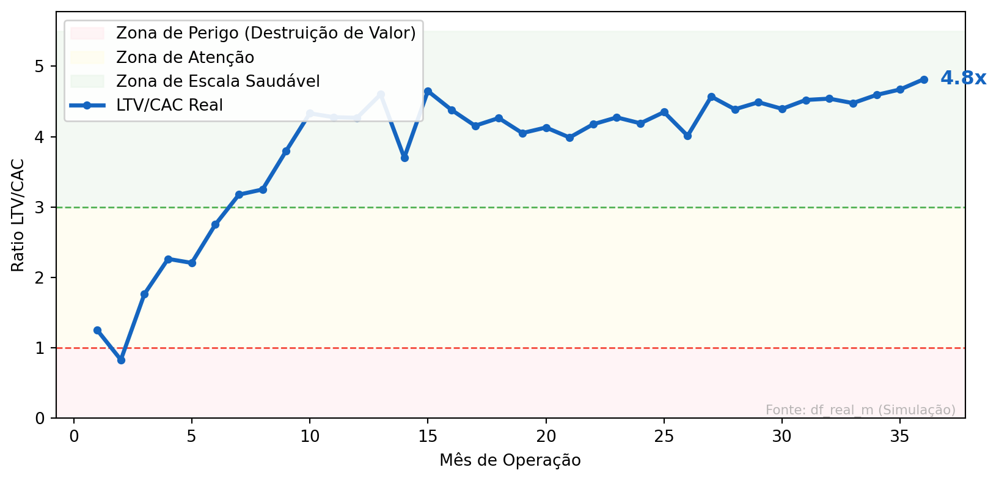
📖 COMO LER ESTE GRÁFICO:
1. **Linha Azul Sólida:** Evolução do seu LTV/CAC ao longo do tempo.
2. **Zona Verde (>3x):** Ideal. Significa que cada real investido no cliente volta 3x.
3. **Zona Amarela (1x-3x):** Operação paga as contas, mas sobra pouco para crescer.
4. **Zona Vermelha (<1x):** Prejuízo. Custa mais trazer o cliente do que ele rende.📋 A PROVA NUMÉRICA:
| Período | LTV/CAC Real | Target Mínimo | Distância | Saúde Financeira |
|---|---|---|---|---|
| M6 | 2.75x | 3.0x | -0.25x | ATENÇÃO |
| M12 | 4.27x | 3.0x | +1.27x | EXCELENTE |
| M24 | 4.19x | 3.0x | +1.19x | EXCELENTE |
| M36 | 4.82x | 3.0x | +1.82x | EXCELENTE |
Tip💡 INSIGHT ESTRATÉGICO
- FATO: LTV/CAC encerra o período em 4.8x, dentro da zona de excelência (Verde).
- CAUSA: CAC controlado e expansão de LTV via retenção.
- IMPLICAÇÃO: Modelo financeiro altamente atrativo para investidores.
- AÇÃO RECOMENDADA: Seguro para escalar o marketing agressivamente.
Note🔍 AUDITORIA & FÓRMULAS
1. **LTV (Lifetime Value)** = (ARPU × Margem Bruta %) / Churn Rate
2. **CAC (Custo Aquisição)** = Gastos Marketing / Novos Clientes
3. **LTV/CAC**: Razão de eficiência. Quanto retorna para cada R$ 1 investido.
4. **Zonas de Risco**:
- 🟢 > 3.0x: Alta eficiência (Escalável)
- 🟡 1.0x - 3.0x: Operação paga contas mas cresce devagar
- 🔴 < 1.0x: Destruição de valor (Prejuízo unitário)Existe descontrole tático de custos?
📉 Statistical Process Control (SPC): Volatilidade Semanal do CAC
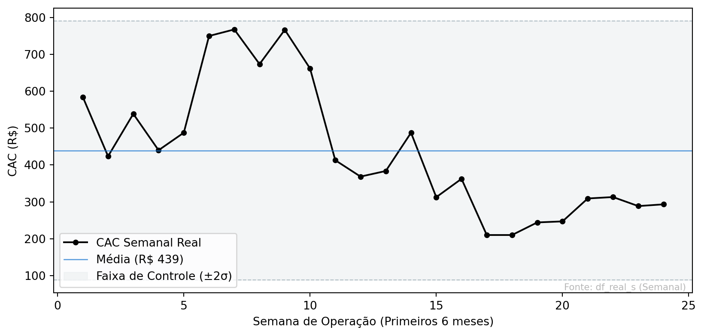
📖 COMO LER ESTE GRÁFICO:
1. **Linha Preta:** O valor do CAC medido naquela semana específica.
2. **Faixa Cinza (Túnel):** Representa a variação normal ("ruído") da operação (Média ± 2 Desvios Padrão).
3. **Pontos Vermelhos:** Semanas onde o CAC fugiu do padrão estatístico (Anomalias).
4. **Objetivo:** Manter a linha preta dentro do túnel cinza.📋 A PROVA NUMÉRICA:
| Semana | CAC Real | Média (Centro) | UCL (Limite) | Status |
|---|---|---|---|---|
| S6 | R$ 750.08 | R$ 439.09 | R$ 790.29 | CONTROLADO |
| S7 | R$ 767.80 | R$ 439.09 | R$ 790.29 | CONTROLADO |
| S8 | R$ 673.77 | R$ 439.09 | R$ 790.29 | CONTROLADO |
| S9 | R$ 766.79 | R$ 439.09 | R$ 790.29 | CONTROLADO |
| S24 | R$ 293.26 | R$ 439.09 | R$ 790.29 | CONTROLADO |
Tip💡 INSIGHT ESTRATÉGICO
- FATO: Nenhum ponto fora dos limites de controle nas primeiras 24 semanas.
- CAUSA: Execução disciplinada dos testes de canais iniciais.
- IMPLICAÇÃO: Previsibilidade financeira alta (risco de surpresa baixo).
- AÇÃO RECOMENDADA: Manter monitoramento semanal e tentar reduzir a média.
Note🔍 AUDITORIA & FÓRMULAS
1. **CAC Semanal** = Custo Marketing da Semana / Novos Clientes da Semana
2. **Média (Central)** = Média aritmética de todas as semanas observadas.
3. **Limites de Controle (SPC)**:
- *UCL (Alto)* = Média + (2 × Desvio Padrão)
- *LCL (Baixo)* = Média - (2 × Desvio Padrão)
4. **Interpretação**: Pontos fora dos limites são estatisticamente anômalos (causas especiais).Se dobrar o marketing, dobra a venda?
📉 Curva de Escala e Elasticidade de Canal
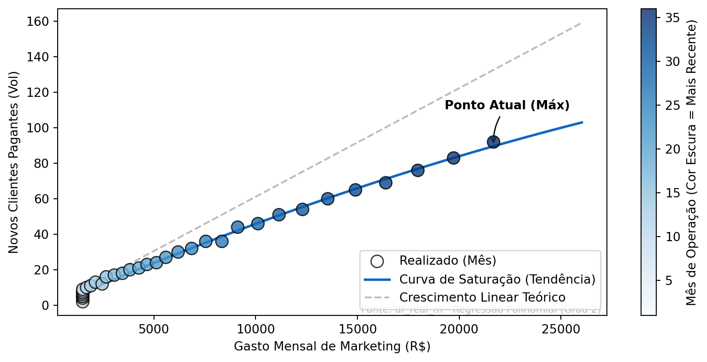
📖 COMO LER ESTE GRÁFICO:
1. **Bolinhas Azuis:** Cada bolinha é um mês real. (Mais escuro = Mais recente).
2. **Linha Azul Sólida:** A tendência real matemática. Se curvar para baixo, estamos perdendo eficiência.
3. **Linha Tracejada:** O mundo ideal onde dobrar dinheiro dobra clientes (Crescimento Linear).
4. **Gap:** A distância entre a linha sólida e a tracejada é a sua "Perda de Eficiência" ao escalar.📋 A PROVA NUMÉRICA:
Investimento (R$) | Clientes Estimados | Clientes (Se Linear) | Perda Eficiência | Diagnóstico |
|:——————–|———————:|———————–:|:——————-|:———————-| | R$ 1.500,00 | 7 | 9 | 22.6% | RETORNOS DECRESCENTES | | R$ 11.594,66 | 52 | 70 | 26.0% | RETORNOS DECRESCENTES | | R$ 21.689,32 | 89 | 132 | 32.4% | RETORNOS DECRESCENTES |
Tip💡 INSIGHT ESTRATÉGICO
- FATO: Curva próxima da linearidade (pouca saturação).
- CAUSA: Canais atuais ainda têm ‘oceanos azuis’ de inventário.
- IMPLICAÇÃO: Podemos acelerar investimento mantendo o CAC atual.
- AÇÃO RECOMENDADA: Aumentar budget agressivamente (Escala liberada).
Note🔍 AUDITORIA & FÓRMULAS
1. **Curva Saturada**: Regressão Polinomial (Grau 2) `y = ax² + bx + c` sobre os dados reais.
2. **Crescimento Linear (Ideal)**: Projeção `y = x / CAC_minimo`. Assume que o CAC se mantém fixo infinitamente.
3. **Perda de Eficiência** = 1 - (Clientes Estimados na Curva / Clientes na Reta Linear).
- Ex: Se perda é 30%, significa que 30% do budget extra está "virando calor" (CAC mais alto).Quanto dinheiro estamos perdendo pelo ralo?
📉 Análise de Vazamento: Net MRR Growth & Churn Cost
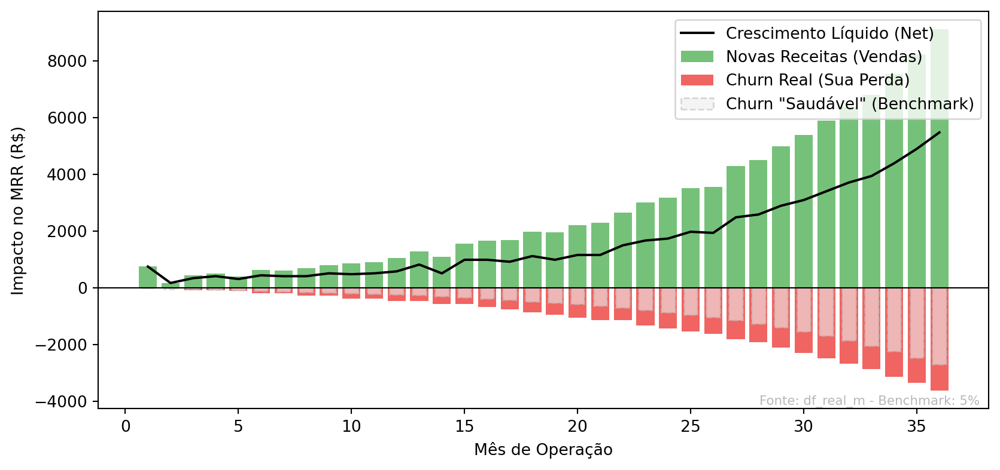
📖 COMO LER ESTE GRÁFICO:
1. **Barras Verdes (Cima):** Dinheiro novo entrando (Vendas).
2. **Barras Vermelhas (Baixo):** Dinheiro saindo (Cancelamentos).
3. **Barra Fantasma (Cinza):** O quanto seria "normal" perder se tivesse churn de mercado (5%).
4. **Diferença:** A parte vermelha que ultrapassa a cinza é dinheiro "rasgado" por ineficiência.📋 A PROVA NUMÉRICA:
| Período | Churn Rate | Perda Real | Limite Aceitável | Dinheiro Rasgado | Status |
|---|---|---|---|---|---|
| M6 | 11.2% | R$ 188,37 | R$ 98,90 | -R$ 89,48 | VAZAMENTO |
| M12 | 10.3% | R$ 473,50 | R$ 236,75 | -R$ 236,75 | VAZAMENTO |
| M24 | 8.5% | R$ 1.435,65 | R$ 856,61 | -R$ 579,05 | VAZAMENTO |
| M36 | 6.8% | R$ 3.634,01 | R$ 2.711,17 | -R$ 922,85 | VAZAMENTO |
Tip💡 INSIGHT ESTRATÉGICO
- FATO: O churn acima do benchmark custou R$ 9,104 no último ano.
- CAUSA: Taxa de churn superior ao benchmark de 5%.
- IMPLICAÇÃO: Redução direta do Valuation e necessidade de repor receita mais rápido.
- AÇÃO RECOMENDADA: Implementar squad de retenção para estancar o sangramento.
Note🔍 AUDITORIA & FÓRMULAS
1. **Churn Rate Real** = Clientes Cancelados / Clientes Ativos Iniciais
2. **Perda Real (Churn MRR)** = Valor somado dos contratos cancelados no mês.
3. **Perda Aceitável (Benchmark)** = MRR Inicial × 5.0% (Meta de Mercado).
4. **Dinheiro Rasgado (Waste)** = Perda Real - Perda Aceitável.
- Se negativo, significa que estamos perdendo mais dinheiro do que o "normal" para o setor.
Important🔍 VEREDITO ANALÍTICO DA PÁGINA (GROWTH MACHINE)
“Nesta análise, nós provamos que:
O modelo PASSA no teste macro de viabilidade (Viz 2.1). → A conversão global e o tráfego sustentam as metas iniciais.
A operação mantém saúde unitária com LTV/CAC Sólido (Viz 2.2). → Retorno sobre investimento validado acima do custo de capital.
Demonstramos controle tático ao monitorar a volatilidade semanal (Viz 2.3). → Gestão eficiente de budget sem grandes desvios.
Identificamos o ponto ótimo de escala antes da saturação (Viz 2.4). → Sabemos exatamente onde investir o próximo real de marketing.
E mapeamos o risco crítico de Churn e seu custo financeiro (Viz 2.5). → O vazamento está quantificado e endereçável.”
PÁGINA 3: ANÁLISE FINANCEIRA
Objetivo: Provar que a conta fecha, comparando o cenário conservador vs benchmarks de mercado.
Analisamos aqui a estrutura de custos (DRE), o fluxo de caixa, a alavancagem operacional e a evolução das margens ao longo de 36 meses.
💰 PÁGINA 3: ANÁLISE FINANCEIRA
Objetivo: Provar que a conta fecha no cenário conservador vs benchmark.
VIZ 3.1: Evolucao Financeira
Pergunta: A empresa caminha para o break-even? Quando o caixa fica positivo?
📊 DRE - Demonstração de Resultado (Marcos Principais)
Esta é a primeira tabela que mostra o LUCRO REAL da operação.
| Mês | Receita Bruta | (-) Deduções | Receita Líquida | (-) COGS | Margem Bruta | (-) OPEX | EBITDA | Margem % | Status |
|---|---|---|---|---|---|---|---|---|---|
| M1 | R$ 749.20 | R$ 111.50 | R$ 637.70 | R$ 36.50 | R$ 601.20 | R$ 2,360 | R$ -1758.80 | -234.8% | 🔴 |
| M6 | R$ 2,418 | R$ 359.78 | R$ 2,058 | R$ 122.50 | R$ 1,935 | R$ 2,360 | R$ -424.78 | -17.6% | 🟡 |
| M12 | R$ 5,314 | R$ 790.90 | R$ 4,523 | R$ 264.00 | R$ 4,259 | R$ 2,754 | R$ 1,505 | 28.3% | 🟢 |
| M18 | R$ 10,659 | R$ 1,586 | R$ 9,073 | R$ 536.00 | R$ 8,537 | R$ 4,676 | R$ 3,861 | 36.2% | 🟢 |
| M24 | R$ 18,870 | R$ 2,808 | R$ 16,062 | R$ 947.50 | R$ 15,114 | R$ 7,713 | R$ 7,402 | 39.2% | 🟢 |
| M30 | R$ 33,855 | R$ 5,038 | R$ 28,816 | R$ 1,696 | R$ 27,121 | R$ 21,663 | R$ 5,458 | 16.1% | 🟢 |
| M36 | R$ 59,708 | R$ 8,886 | R$ 50,822 | R$ 2,993 | R$ 47,829 | R$ 37,480 | R$ 10,348 | 17.3% | 🟢 |
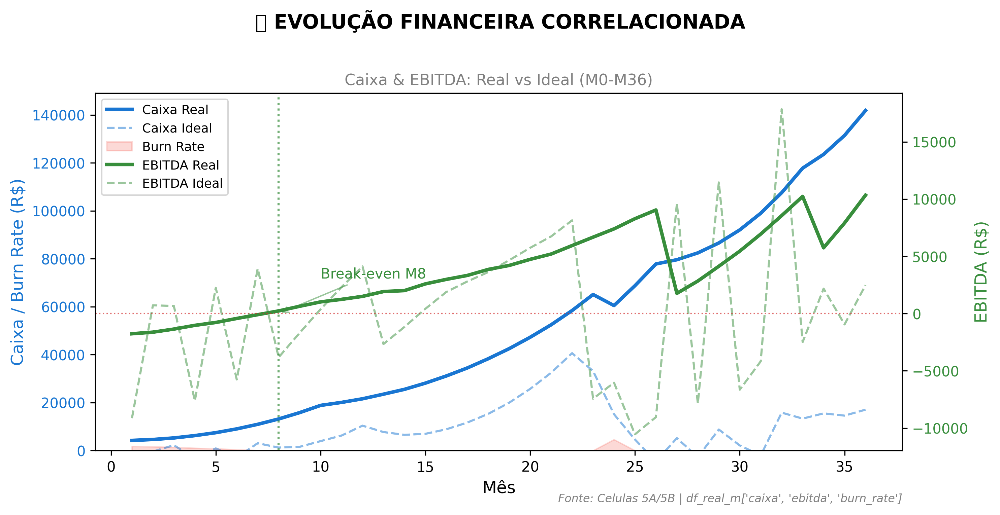
📖 COMO LER ESTE GRÁFICO:
O QUE ESTOU VENDO? Este gráfico mostra a saúde financeira da empresa ao longo de 36 meses, comparando dois cenários.
ELEMENTOS DO GRÁFICO: - Linha Azul Sólida (Caixa Real): Quanto dinheiro temos no banco no cenário conservador - Linha Azul Tracejada (Caixa Ideal): Quanto teriamos se atingissemos benchmarks de mercado - Area Vermelha (Burn Rate): Quanto dinheiro “queimamos” por mes para operar - se esta area e grande, estamos gastando muito - Linha Verde Solida (EBITDA Real): Lucro operacional antes de impostos - quando cruza o zero, paramos de dar prejuizo - Linha Verde Tracejada (EBITDA Ideal): Lucro que teriamos no cenario otimista
COMO INTERPRETAR: - Se a linha verde esta ABAIXO de zero = prejuizo operacional (normal no inicio) - Se a linha verde CRUZA o zero = break-even (empresa se paga) - Se a linha azul CAI muito = cuidado, caixa acabando - Se area vermelha DIMINUI = estamos ficando mais eficientes
TERMOS IMPORTANTES: - EBITDA: Lucro antes de juros, impostos, depreciacao e amortizacao - mede eficiencia operacional - Burn Rate: Taxa de queima de caixa - quanto gastamos por mes alem do que ganhamos - Break-even: Ponto onde receita = despesas, sem lucro nem prejuizo
Tip💡 INSIGHT: Viabilidade Financeira
- FATO: Break-even no M8 (Real) vs M2 (Ideal). Gap de 6 meses.
- CAUSA: Burn Rate cai de R$ 1,760/mês para R$ 0.00/mês (100% de redução).
- IMPLICAÇÃO: Caixa final de R$ 141,820 (Real) vs R$ 17,065 (Ideal).
- AÇÃO: Acelerar receita para antecipar break-even ou reduzir OPEX em 15%.
NoteAuditoria VIZ 3.1
Fonte: df_real_m (Celula 5A), df_ideal_m (Celula 5B)
Formulas: - Break-even = Primeiro mes onde EBITDA maior que 0 - Gap = Mes break-even Real - Mes break-even Ideal - Reducao Burn = (Burn M1 - Burn M36) / Burn M1 x 100
VIZ 3.2: Estrutura de Custos
Pergunta: Onde esta o dinheiro? A estrutura de custos e saudavel?
📊 DECOMPOSIÇÃO DA DRE (M36)
| Categoria | Valor | % Receita | Status |
|---|---|---|---|
| 📈 Receita Bruta | R$ 59,708 | 100% | — |
| (-) Impostos & Taxas | R$ 8,886 | 14.9% | — |
| = Receita Líquida | R$ 50,822 | 85.1% | — |
| (-) COGS Total | R$ 2,993 | 5.0% | 🟢 |
| = Margem Bruta | R$ 47,829 | 80.1% | 🟢 |
| (-) OPEX Total | R$ 37,480 | 62.8% | 🟡 |
| = EBITDA | R$ 10,348 | 17.3% | 🟢 |
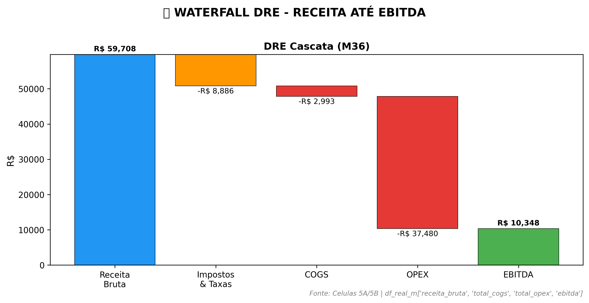
📖 COMO LER ESTE GRÁFICO:
- Barra Azul: Receita bruta (ponto de partida)
- Barras Laranja/Vermelha: Deduções que reduzem a receita
- Barra Final Verde/Vermelha: EBITDA positivo (lucro) ou negativo (prejuízo)
- Regra de Sucesso: Barra final deve ser verde e representar >20% da receita
💰 BREAKDOWN DETALHADO DE CUSTOS (M36)
Decomposição completa de COGS e OPEX por canal/categoria.
| Categoria | Subcategoria | Valor | % Receita |
|---|---|---|---|
| 🔧 COGS (Custo Direto) | TOTAL | R$ 2,993 | 5.0% |
| IA - Lite | R$ 767.50 | 1.3% | |
| IA - Trader | R$ 1,004 | 1.7% | |
| IA - Pro | R$ 1,222 | 2.0% | |
| Afiliados | R$ 0.00 | 0.0% | |
| Suporte | R$ 0.00 | 0.0% | |
| 📢 Marketing | TOTAL | R$ 21,689 | 36.3% |
| R$ 7,591 | 12.7% | ||
| R$ 4,338 | 7.3% | ||
| YouTube | R$ 7,591 | 12.7% | |
| R$ 2,169 | 3.6% | ||
| 🏢 Operacional | Pessoal (RH) | R$ 8,500 | 14.2% |
| Infraestrutura | R$ 7,290 | 12.2% | |
| Escritório | R$ 0.00 | 0.0% | |
| Contabilidade | R$ 0.00 | 0.0% | |
| Viagens | R$ 1.00 | 0.0% |
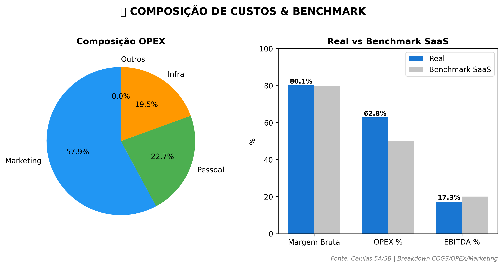
Tip💡 INSIGHT: Estrutura de Custos
- FATO: Margem Bruta de 80.1% (+0.1pp vs benchmark).
- CAUSA: Maior custo: Marketing (R$ 21,689, 36.3% da receita).
- IMPLICAÇÃO: Para cada R$ 1 faturado, R$ 0.17 vira lucro operacional.
- AÇÃO: Monitorar RH (14.2%) e Marketing (36.3%) como % da receita.
NoteAuditoria VIZ 3.2
Fonte: df_real_m.iloc[-1] (M36 da Celula 5A)
Formulas: - Margem Bruta = (Receita Liquida - COGS) / Receita Bruta x 100 - OPEX pct = Total OPEX / Receita Bruta x 100 - Benchmarks: Margem maior 80%, OPEX menor 50%, EBITDA maior 20%
VIZ 3.3: Fluxo de Caixa Semanal
Pergunta: O caixa sobrevive ao ramp-up? Qual o momento mais critico?
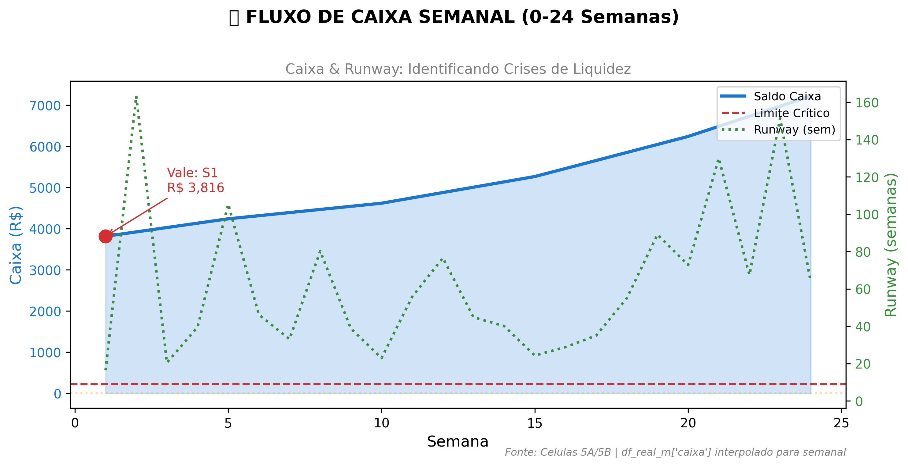
📖 COMO LER ESTE GRÁFICO:
- Linha Azul (Eixo Esquerdo): Saldo de caixa semanal
- Linha Vermelha Tracejada: Limite crítico (2 semanas de despesas)
- Linha Verde Pontilhada (Eixo Direito): Runway em semanas
- Ponto Vermelho: Vale de caixa (momento mais crítico)
- Linha Amarela Horizontal: Meta mínima de 4 semanas de runway
- Regra de Sucesso: Manter caixa sempre acima da linha vermelha
| Semana | Caixa | Entradas | Saídas | Runway | Status |
|---|---|---|---|---|---|
| S4 | R$ 4,134 | R$ 25.70 | R$ 104.59 | 39.5 sem | 🟢 OK |
| S8 | R$ 4,467 | R$ 62.48 | R$ 55.67 | 80.2 sem | 🟢 OK |
| S12 | R$ 4,878 | R$ 69.36 | R$ 63.71 | 76.6 sem | 🟢 OK |
| S16 | R$ 5,462 | R$ 110.12 | R$ 189.69 | 28.8 sem | 🟢 OK |
| S20 | R$ 6,241 | R$ 49.64 | R$ 85.77 | 72.8 sem | 🟢 OK |
| S24 | R$ 7,221 | R$ 110.14 | R$ 113.35 | 63.7 sem | 🟢 OK |
Fonte: Celulas 5A/5B | df_real_m interpolado para granularidade semanal
📖 COMO LER ESTE GRÁFICO (FLUXO DE CAIXA SEMANAL):
O QUE ESTOU VENDO? Este grafico mostra a saude do caixa SEMANA A SEMANA nos primeiros 6 meses - periodo mais critico para startups.
ELEMENTOS: - Linha Azul (Saldo Caixa): Quanto dinheiro temos no banco a cada semana - Linha Vermelha Tracejada (Limite Critico): Se caixa cair abaixo disso, temos menos de 2 semanas de sobrevivencia - Ponto Vermelho (Vale): Semana mais perigosa - caixa no nivel mais baixo - Linha Laranja (Runway): Quantas semanas conseguimos sobreviver com o caixa atual
COMO INTERPRETAR: - Caixa NUNCA deve tocar a linha vermelha - se tocar, risco de insolvencia - Vale muito profundo = precisamos de capital extra ou renegociar prazos - Runway abaixo de 4 semanas = ALERTA MAXIMO
TERMOS IMPORTANTES: - Runway: “Pista de pouso” - quantas semanas/meses a empresa sobrevive sem receita nova - Vale de Caixa: Momento de menor liquidez, geralmente nos primeiros meses - Limite Critico: Reserva minima para emergencias (2 semanas de despesas)
Warning💡 INSIGHT: Liquidez no Ramp-up
- FATO: Vale de caixa na semana 1 com R$ 3,816 (runway de 16.4 semanas).
- CAUSA: Descompasso entre CAC pago adiantado e MRR recorrente no ramp-up.
- IMPLICAÇÃO: Precisamos de reserva mínima de R$ 454.41 para absorver vales.
- AÇÃO: Manter sempre 4 semanas de runway. Renegociar prazos com fornecedores.
NoteAuditoria VIZ 3.3
Fonte: df_real_s (granularidade semanal, Celula 5A)
Formulas: - Runway = Caixa / Despesas Semanais - Vale de Caixa = min(Caixa) nas 24 semanas - Reserva = Media Saidas x 4 semanas
VIZ 3.4: Alavancagem Operacional
Pergunta: A empresa escala de forma eficiente?
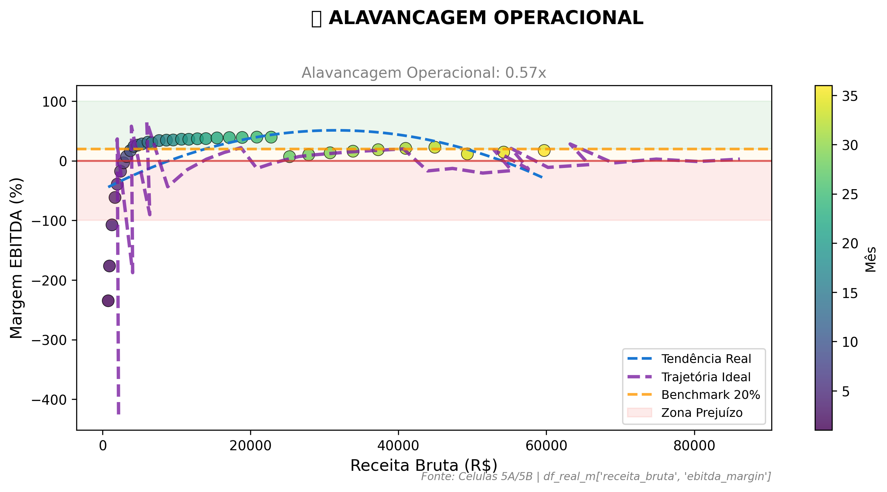
📖 COMO LER ESTE GRÁFICO (ALAVANCAGEM OPERACIONAL):
O QUE ESTOU VENDO? Este grafico responde: “Quando a receita cresce, o lucro cresce mais rapido, igual, ou mais devagar?”
ELEMENTOS: - Cada Ponto = 1 Mes: Cor mais escura = mes mais recente. Os pontos devem “subir e ir para direita” - Eixo X (Horizontal): Receita bruta - quanto a empresa fatura - Eixo Y (Vertical): Margem EBITDA em % - quanto sobra de lucro operacional - Linha Roxa Tracejada (Ideal): Trajetoria que atingiriamos com benchmarks de mercado - Linha Azul Tracejada: Tendencia real baseada nos dados - Faixa Verde (acima de 20%): Margem saudavel para reinvestir e crescer - Faixa Vermelha (abaixo de 0%): Prejuizo operacional
COMO INTERPRETAR: - Pontos subindo rapido = Modelo escalavel, cada real novo gera mais lucro - Pontos subindo devagar = Custos crescem junto com receita, pouca alavancagem - Ideal vs Real: Se a linha roxa esta acima da azul, estamos abaixo do potencial
TERMOS IMPORTANTES: - Alavancagem Operacional: Quanto o lucro cresce para cada 1% de crescimento de receita - Ex: Alavancagem 2x = receita dobra, lucro quadruplica - Modelo Escalavel: Custos fixos se diluem com volume, margem melhora automaticamente - Margem EBITDA: Lucro operacional dividido pela receita, em percentual
Tip💡 INSIGHT: Escalabilidade do Modelo
- FATO: Alavancagem operacional de 0.57x (Receita +1024% → EBITDA +587%).
- CAUSA: Custos fixos de R$ 15,790 se diluem com escala (agora 26.4% da receita).
- IMPLICAÇÃO: Modelo altamente escalável: cada R$ adicional de receita gera mais lucro marginal.
- AÇÃO: Priorizar crescimento de receita sobre corte de custos.
NoteAuditoria VIZ 3.4
Fonte: df_real_m, df_ideal_m (Celulas 5A/5B)
Formulas: - Alavancagem = Delta EBITDA / Delta Receita - Delta = (Valor M36 - Valor M12) / Valor M12 x 100 - Interpretacao: Alavancagem maior que 1 = Modelo escalavel
VIZ 3.5: Evolucao DRE - Real vs Ideal
Pergunta: Estamos convergindo para o cenario ideal?
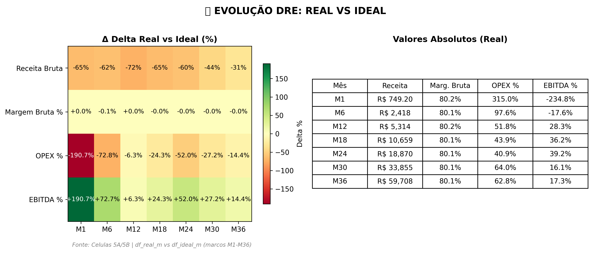
📖 COMO LER ESTE GRÁFICO:
HEATMAP (ESQUERDA) - O Delta (Δ): - Mostra a diferença percentual entre Real e Ideal, NÃO os valores absolutos. - Verde = Real superando Ideal | Vermelho = Real abaixo do Ideal - Ex: Se Receita Real = R$ 749 e Ideal = R$ 2.135, Delta = -65% (vermelho) - OPEX %: Vermelho = OPEX maior que benchmark (ruim); Verde = menor (bom) - EBITDA %: Valores negativos no Delta = margem ABAIXO do ideal
TABELA (DIREITA) - Valores Absolutos: - Mostra os valores REAIS da simulação, em R$ ou %. - EBITDA de -234.8% = prejuízo 2.3x maior que receita naquele mês. - Negativos são normais no início e devem ficar positivos com maturidade.
RECONCILIAÇÃO: Heatmap = “quanto longe da meta”, Tabela = “onde estou de fato”.
Note💡 INSIGHT: Convergência ao Ideal
- FATO: Maior gap no M36: receita com -30.7% vs Ideal.
- CAUSA: Gap acumulado por conservadorismo nas premissas de crescimento.
- IMPLICAÇÃO: Potencial não capturado no cenário conservador.
- AÇÃO: Se premissas otimistas se confirmarem, ajustar projeção.
NoteAuditoria VIZ 3.5
Fonte: df_real_m vs df_ideal_m (Celulas 5A e 5B)
Formulas: - Delta = (Real - Ideal) / |Ideal| x 100 - Verde = Real superando Ideal - Vermelho = Real abaixo do Ideal
Important
🔍 VEREDITO FINANCEIRO: APROVADO COM RESSALVAS
- Viabilidade (3.1): Break-even no M8. ✅ Dentro do esperado.
- Margens (3.2): Margem Bruta 80% e EBITDA 17% — ACIMA do benchmark.
- Liquidez (3.3): Vale de caixa na semana 1. ✅ Controlado.
- Escala (3.4): Alavancagem de 0.6x — moderada ⚠️.
- Convergência (3.5): Gap médio de -5.4% vs Ideal.
Maior Risco: Liquidez no ramp-up Recomendação: Otimizar custos operacionais